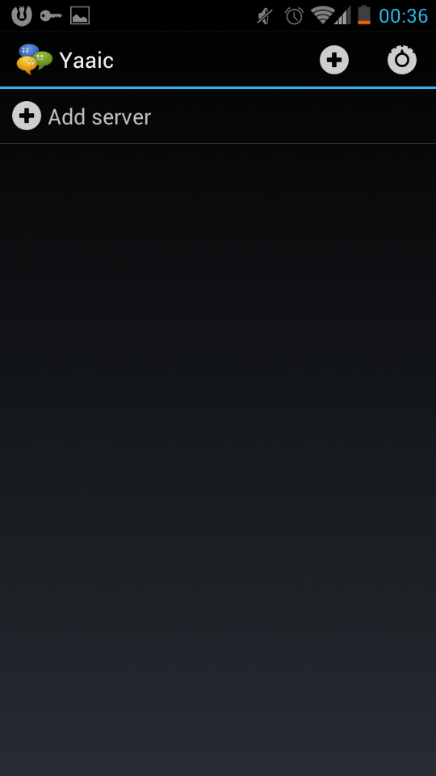

Dieser Leitfaden soll euch dabei behilflich sein ein IRC Clienten auf dem Android einzurichten.
Zu beginn müsst ihr einen der folgenden IRC Clienten vom GooglePlay Store herunterladen:
- AndroIRC
- AndChat
- Android IRC
AndroIRC
Klicht Installieren und akzeptiert die App berechtigungen.
Nach dem erfolgreichen Download und der Installation von AndroIRC ist es Zeit die Konfiguration vorzunehmen um mit dem AnonOps Netzwerk in verbindung treten zu können.
Öffne AndroIRC > Menü (auf dem Telefon) > Optionen
Richtig ausgeführt sollte es in etwas so aussehen:
Von hier aus benötigt ihr die Optionen und dann auf Server.
Im Servertab müssen wir diese editieren/hinzufügen um auf AnonOps zu gelangen. Hier nun wie folgt Menü > neuer Server

Name:
AnonOps
Server:
irc.anonops.com
Port:
6697 (SSL Enabled)
Passwort:
EuerPasswort
NickName:
EuerNickname
Vergewissert euch dass ihr "Benutze SSL Zertifkat" und "sichere Verbindung" ausgewählt habt.
Gratuliere die Einstellungen sind gemacht um euch auf AnonOps zu Verbinden via AndroIRC!
Yaaic
Wähle Yaaic in F-droid

Klickt Installieren und akzeptiert die App berechtigungen.

Nach dem erfolgreichen Download und der Installation von Yaaic ist es an der Zeit die Einstellungen vorzunehmen um auf das AnonOps Netzwerk zu gelangen.
Klickt den "Neuen Server" Knopf.

Als nächstes müsst ihr die Details so eingeben wie unten angegeben wird. Vergewissert euch dass das "nutze SSL" Kästchen angehakt ist.
Runter Scrollen, den Nicknamen, Identifizierung und den Realen (gefäschten!) Namen eintragen.

Name:
AnonOps
Server:
irc.anonops.com
Port:
6697 (SSL Enabled)
Passwort:
EuerPasswort
NickName:
EuerNickname

Gratuliere die Einstellungen sind gemacht um euch auf AnonOps zu Verbinden via Yaaic!
 Orbot: Anonymes Web Browsen
Orbot: Anonymes Web Browsen
Orbot bringt die Fähigkeiten von Tor
direkt auf Android. Tor benutzt Onion-Routing um Zugang zu Netzwerk Diensten
zu erhalten die entweder Geblockt, Zensiert oder Überwacht werden, und
schützt zudem die Identität des Benuzters der diese anfordert.
App Download. Zeige Quellcode.
 Orweb: Privater Web Browser
Orweb: Privater Web Browser
Orweb ist der Anonymste Browser für Android um jede Webseite, egal ob Normal, Zensiert oder Versteckt (sog. hidden web) anzusehen. Am besten Kombiniert mit Orbot. Orweb schützt euch vor Netzwerk Analyse, Blockt Cookies, speichert keine Browser-Historie, und sperrt Flash um auf Nummer-Sicher zu gehen.
App Download. Zeige Quellcode.
 ChatSecure: Privates und Sicheres Instant Messaging
ChatSecure: Privates und Sicheres Instant Messaging
Früher bekannt als "Gibberbot", benutzt diese App Off-The-Record (OTR) Verschlüsselung. Eure Nachrichten können nicht Mitgeschrieben oder Abgefangen werden. WICHTIG: Diese Sicherheit wird nur dann gewährleistet wenn dein Chatpartner auch ChatSecure, oder einen anderen kompatiblen OTR Klienten wie Xabber, Jitsi, Adium oder Pidgin benutzt.
App Download. Zeige Quellcode.
 Obscuracam: Verschleiert Sensiblen Bildinhalt
Obscuracam: Verschleiert Sensiblen Bildinhalt
In einer Welt voller Viren-Videos und Gesichtserkennung. ObscuraCam hilft euch Fotos und Videos zu teilen und trotzdem eure Privatsphäre und die eurer Liebsten zu wahren. Mit ObscuraCam könnt ihr Gesichter in Fotos und Videos verwischen bzw. verhüllen. Informationen die euch als Kameramann Identifizieren könnten werden für zusätzliche Sicherheit entfernt.
App Download. Zeige Quellcode.
 Firefox Mobiles Proxy Addon
Firefox Mobiles Proxy Addon
Ein Firefox Add-on für Android ermöglicht euch HTTP und SOCKS Proxy Einstellungen über ein neues Options Menü. Genauso wie die Verbindung von Orbot über Tor, aber eben auch jeden anderen Netzwerk Proxy Service.
App Download. Zeige Quellcode.